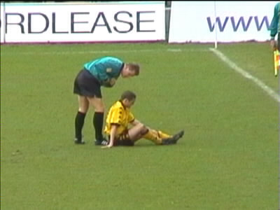

|
FC Groningen - Roda JC 1-3 8 april 2001 |
Dit is geen verpauperd industrieel monument, maar een
tribune van het Oosterparkstadion in Groningen!
Het enige café in de buurt had de weinig uitnodigende naam
Ripperdabar. We besloten toch maar eens voorzichtig binnen
te treden. Veel verder dan een meter kwamen we niet binnen.
De "zware jongens" van Groningen maakten ons duidelijkdat
het gezonder voor ons was om te vertrekken.
Waarna we maar een biertje uit eigen voorraad namen en
een praatje maakten met oom agent.
De FP- en Bakkerklanten waren al in het stadion en ook daar
was geen bier!
Het Roda Vrouwenfront.
Dit is Kevin van de Kevin-vaan.
Er waren ongeveer 150 Rodasupporters.
Bij winst zou Roda weer op de vierde plaats komen.

Jack van Hulten beoordeeld hoe serieus de kwetsuur van
Soetaers is welke werd toegebracht door Schoenmakers en
die daarvoor geel kreeg.
Dankjewel kleine meid uit Ermelo!
Het bouwvallige stadion van FC Groningen.
Soetaers mag in de 19e minuut een vrije trap nemen.
En die ging erin! 0-1.
In de 25e minuut kreeg doelman Beukenkamp een schot van
Van der Luer niet onder controle waarna Sonko de bal kon
inschieten. 0-2.
De scheidsrechter keurde een goal van Vrede af en zag twee
maal een handsbal van Groningen over het hoofd.
Hoe, hoe,hoe.........
Jantje gaat Europa in........
Soetaers-fans!

In de 70e min. werd Sonko vervangen door Tomasic.
Het Groningen publiek liet hun club massaal in de steek toen
Anastasiou 1-3 scoorde.
Op de Radio 538-tribune werd de wedstrijd vrolijk uitgekeken.
In de slotfase kwam Lawal nog in voor Soetaers.
Het team bedankt de meegereisde supporters.

Het stadion ligt in een woonwijk waardoor we al gauw vast
kwamen te zitten tussen auto's, paarden en voetgangers.
Er was duidelijk iets aan de hand.
Maar omdat we toch niet welkom waren in de Ripperdabar...
....gingen we onze pintjes aan de voet van de Martinitoren
halen in de Kostery.
©KPD